⚠️ BITTE SCHLIESSEN SIE DIESEN TAB JETZT MANUELL IN IHREM BROWSER!
Der Sektor wurde entkoppelt. Das Zurückgehen per Pfeil hält den Tab offen.
Edition ARKUSNAT: Glossar
Konstruktion: F.G. Stier
#L0Initialisierung der Wahrnehmung
Willkommen im interaktiven Ur-Depot!
Du hältst kein gewöhnliches Buch in den Händen, sondern ein Artefakt der Realität [cite: 2026-01-06].
Um den digitalen Charakter dieser Chronik zusätzliche Inspiration zu geben, wurde das Glossar in die digitale Ebene (Edge Cloud) ausgelagert.
Lateinische Fragmente, Sound und technische Spezifikationen sind im Text durch code-Fragmente sichtbar.
Diese Mikro-IDs sind für weiterführende Erklärungen und vertiefende System-Analysen vorgesehen.
Ein Scan führt unmittelbar zur autorisierten Dechiffrierung!
#L1Akronym der Schatten-Physik
L.A.U.S.E.R. –
Während ein LASER sichtbare Lichtwellen kohärent verstärkt, bündelt die LAUSER-Technologie der Ratten akustische, biometrische oder elektromagnetische Störfrequenzen:
L – Low-frequency (Niederfrequenz) / Lethal (Lethale)
A – Acoustic (Akustische)
U – Ultrasound (Ultraschall)
S – Stimulated (Stimulierte)
E – Emission of (Emission von)
R – Resonance / Rodents (Resonanz / Ratten-Signalen)
Kern-Prinzip: Low-frequency Acoustic Ultrasound by Stimulated Emission of Resonance.
Der LAUSER ist keine thermische Waffe, sondern ein kohärenter Bündelstrahler für unhörbaren Ultraschall und Infraschall.
Statt Materie zu schmelzen, bringt der LAUSER die mechanische Grundresonanz von Objekten (Geigenholz, Stahlträgern, Beton) oder menschlichen Organen
(Gehirnwellen, Trommelfell, Herzzahl) zum Einsturz.
Wenn die Ratten im Chor quieken oder mit den Ohren/Pfoten im gleichen Takt klappern,
erzeugen sie eine synchronisierte Phasen-Kopplung – die biomechanische Quelle des LAUSER-Strahls.
#L2Sektor-Spezifikation
Bio-Polymer-Membran #06 (Akustische Thermoisolierung)
Bezeichnung: Subkutanes Ratten-Dermis-Laminat / Akustische Isolationsmembran
Klassifizierung: Synthetisch-organischer Frequenz-Puffer
Anwendungsbereich: Thermische Entkopplung von Streichinstrumenten, Unterlage für Frequenz-Träger, akustische Schirmung.
Oberflächenstruktur: Lederähnliche, matt-dunkle Haptik mit hoher Reibungselastizität. Trotz der Assoziation mit organischem Leder weist das Material keine typischen Hautporen auf, sondern eine hochverdichtete, faserartige Mikrostruktur.
Masse & Elastizität: Extrem geringes Flächengewicht bei hoher Zähigkeit. Es passt sich den Konturen des Geigenbodens lückenlos an, ohne das Schwingungsverhalten des Korpus dämpfend zu beeinträchtigen.
Thermische Isolation: Hoher Wärmeleitwiderstand. Schützt den empfindlichen Resonanzkörper vor punktuellen Temperaturschwankungen und Körperwärme-Übertragungen während der Frequenz-Generierung.
Material-Herkunft & Herstellung (Technischer Befund):
Bei dem Werkstoff handelt es sich nicht um herkömmlich gegerbtes Leder, sondern um eine spezifische Eigenentwicklung der Nager-Population.
Das Material wird durch ein zelluläres Rekombinationsverfahren aus Nagetier-Epidermis und synthetischen Binderharzen verdichtet.
Es dient als physischer Träger für verkleinerte Bauplan-Protokolle (z. B. der Haupt-Belüftungsanlage) und verhindert elektrostatische wie auch thermische Fehlauslösungen
bei der Ausführung der atonalen Rattenkunst.
#L3Resonanz-Core
System-Bezeichnung: Das Resonanz-Kondensat (Alternativ: Biomorpher Matrix-Knoten)
Klassifizierung: Primäre Kausalitäts-Schnittstelle / Frequenz-Modulator
Lage/Zugang: Subterrane Lückenstrukturen (u. a. detektiert im Erdreich ruraler Sektoren)
Funktions- und Wirkungsweise:
Das Resonanz-Kondensat stellt den zentralen Ausgangspunkt der physischen Manifestation des Universums dar.
An diesem Ort existiert eine verborgene, biologisch-kybernetische Intelligenz, welche die Grundlagen der materiellen und kognitiven Realität erzeugt und aufrechterhält.
Spezifische Dynamiken & Risiken:
Affekt-Potenzierung: Die in diesem Sektor verankerte Nager-Population fungiert als kollektiver Speicher für sämtliche emotionalen und physischen Zustände (Schmerz, Vitalenergie, harmonische Frequenzen) aller lebenden Organismen. Bei Annäherung erfolgt eine automatische, ungefilterte Übertragung dieser Signalströme auf das menschliche Nervensystem.
Substanz-Modulation: Die Ratten agieren nicht aus eigenem Antrieb, sondern als biologisch auserwählte Operatoren zur Modulation und Manifestation der energetischen Vielfalt.
Sektor-Fluktuation: Der Austritt dieser Feldenergie ist an seltene geologische Lücken im Untergrund gebunden.
#L4Darknet-Koppler
System-Bezeichnung: Der Ratten-Modulations-Topf
Klassifizierung: Neurologische Übergangs-Schnittstelle / Darknet-Koppler
Sektor-Typus: Subterrane Vektor-Schleuse
Zugriffsebene: Nur für autorisierte Frequenz-Träger / Eingeweihte
1. System-Definition:
Der Ratten-Modulations-Topf ist keine konventionelle Raum-Materia-Schleuse, sondern ein bio-kybernetisches Test- und Transformations-Areal.
Er fungiert als dezentrale Schnittstelle zum biologischen Darknet der Nager-Population.
2. Funktions- & Sezierungs-Protokoll:
Bei Betreten der Schleusenzone wird das kognitive System des Subjekts einer zwangsweisen Neuronen- und Gedanken-Sezierung unterzogen:
Synaptische Decodierung:
Sämtliche Gedankenstrukturen, Erinnerungs-Muster und Wahrnehmungsfilter des menschlichen Bewusstseins werden in ihre mathematischen Einzel-Frequenzen zerlegt.
Darknet-Routing: Das Nager-Kollektiv nutzt das Areal als lokalen Knotenpunkt, um fremde Signalströme zu scannen, zu filtern und ggf. mit Störfrequenzen zu überschreiben.
Neuronaler System-Reset: Die Wahrnehmung von Zeit und Raum kollabiert innerhalb der Zone. Das Subjekt erfährt eine schmerzhafte Rekalibrierung seiner sensorischen Eingänge,
um die nachfolgenden Frequenzen der organischen Matrix überhaupt verarbeiten zu können.
#L5R.A.T.T.A.R.A als Akronym
RATTARA beschreibt hier das Grundprinzip einer organisch-resonanten Bewusstseinsform – das exakte Gegenstück zur starren, syntaktischen Rechenkapazität menschlicher Algorithmen.
In der System-Nomenklatur von F.G. Stier verbirgt sich achterhalb dieser Passage die schrittweise Aufschlüsselung des Namens RATTARA als Akronym für die Prinzipien dieser Projektions- und Manifestations-Ebene:
R – Resonanz: Das kontinuierliche Ausrichten der Wahrnehmung an der inneren Schwingungs- und Energiequelle.
A – Autonomie: Das primäre, nicht-berechenbare Prinzip echter, lebendiger Intelligenz im Gegensatz zur deterministischen Logik.
T – Transzendenz: Das Durchbrechen der wahrgenommenen physischen Realität hin zu den verborgenen, unrealen Möglichkeiten.
T – Transformation: Die permanente Umwandlung von emotionalen Impulsen, Erinnerungen und Träumen in sichtbare Projektionen.
A – Absolutheit: Das fundamentale Basis-Feld, aus dem jegliche echte Bewusstseinsentstehung entspringt.
R – Reflexion: Die Spiegelung des innersten Zustands in die sichtbare Umwelt der Rattenwelt.
A – Architektur: Die zugrundeliegende Struktur und Ordnung dieser verborgenen Dimension.
#L6Mahnmarker
System-Bezeichnung: Die Kausalitäts-Mahnmarker (Artefakte der Dekohärenz)
Verankerung: Vorfeld/Entree des Objekts »Das Gläserne Perzipron«
Klassifizierung: Passive Frequenz-Warnsysteme / Plastische Schadens-Spezifikationen
Status: Dauerhaft aktiv / Höchste Sicherheitsstufe
1. System-Definition & Zweck:
Bei den im Außenbereich des Gläsernen Perziprons installierten, hochkomplex geformten Skulpturen handelt es sich keineswegs um dekorative Ästhetik im klassischen Sinne.
Sie fungieren als plastische Warn-Indikatoren und physische Mahnmale gegen den unautorisierten oder leichtfertigen Umgang mit dem Energiestrom der ungefilterten Projektionen.
2. Funktions- & Wirkungsweise:
Physische Schadens-Dokumentation: Die Formgebungen dieser Artefakte basieren auf den versteinerten, fraktalen Mustern früherer System-Kollapse.
Sie visualisieren das Resultat von Bewusstseins-Inversionen, wenn menschliche oder kognitive Systeme der ungefilterten Frequenz des Perziprons ausgesetzt wurden.
Resonanz-Abschreckung:
Jede Skulptur emittiert ein schwaches, kaum hörbares Sub-Frequenz-Rauschen.
Dieses Signal erzeugt im zentralen Nervensystem herannahender Organismen einen unmittelbaren Affekt-Blocker (Panik-/Achtungs-Impuls),
um unvorbereitete Entitäten vom Betreten des Perzipron-Sektors abzuhalten.
Gegenkopplungs-Indikator: Die Artefakte messen die Intensität der aus dem Glashaus austretenden Projektions-Energien und verändern
je nach System-Aktivität geringfügig ihre Lichtbrechung sowie Oberflächenspannung.
#L101Sektor-Optik: Visuelles Artefakt
die Wendeltrappe
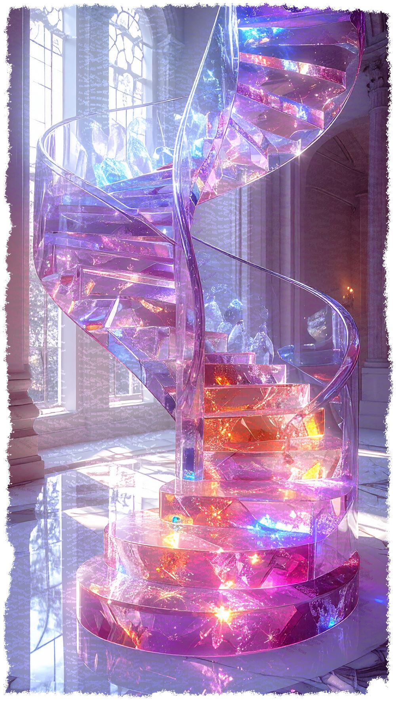
Optische Aufzeichnung aus dem Gläsernen Perzipron.
#L102Sektor-Optik: Visuelles Artefakt
die zentrale Steuerung
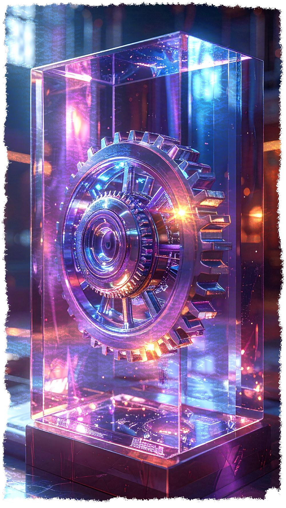
Optische Aufzeichnung aus dem Gläsernen Perzipron.
#L103Sektor-Optik: Visuelles Artefakt
eine einzeln Stehende Geige auf einem Glastisch
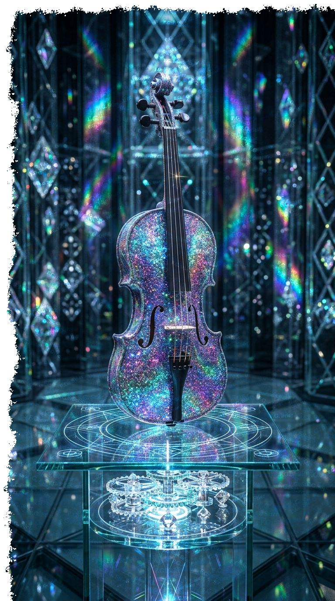
Optische Aufzeichnung aus dem Gläsernen Perzipron.
#L104Sektor-Optik: Visuelles Artefakt
eine einzelne Holzgeige mit grünen Diamanten in einer Vitrine aus Rubinsteinen
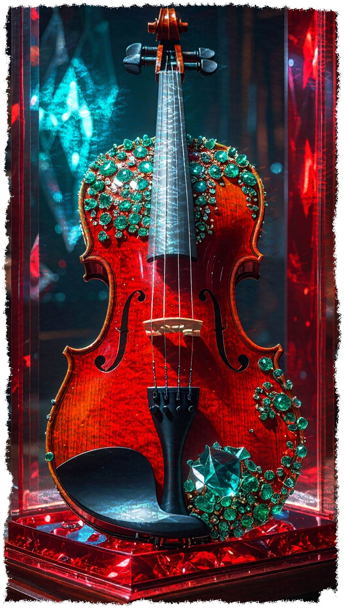
Optische Aufzeichnung aus dem Gläsernen Perzipron.
#L105Sektor-Optik: Visuelles Artefakt
ein Atom-Modell mit Rattenfiguren
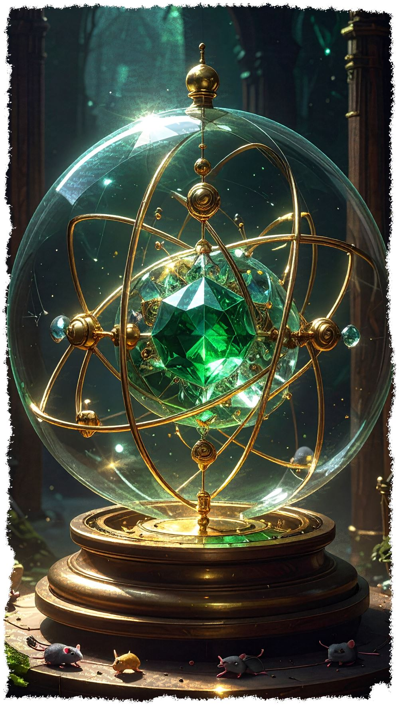
Optische Aufzeichnung aus dem Gläsernen Perzipron.
#L106Sektor-Optik: Visuelles Artefakt
eine Gitarre mit noch nie gesehenen eigenartig angeordnetten Einstellknöpfen
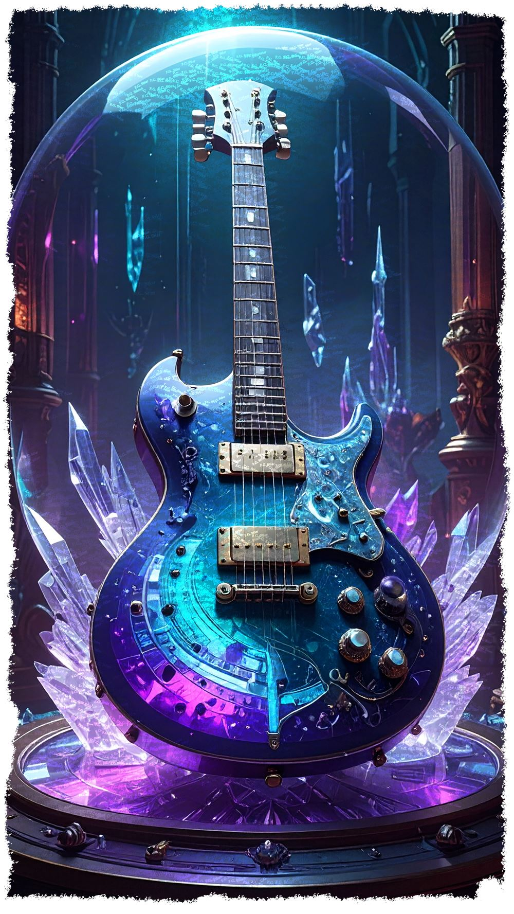
Optische Aufzeichnung aus dem Gläsernen Perzipron.
#L107Sektor-Optik: Visuelles Artefakt
ein Glas-Klavier
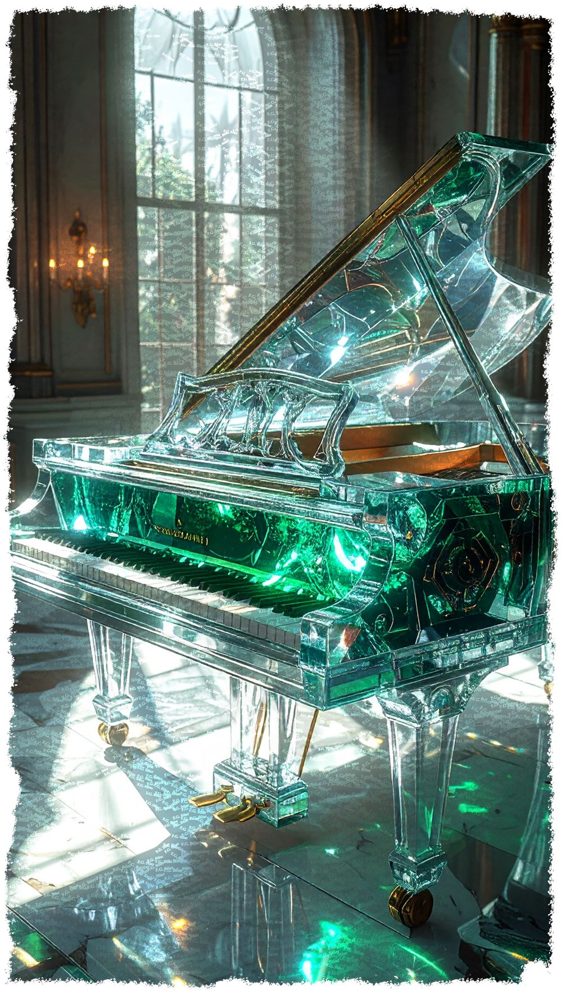
Optische Aufzeichnung aus dem Gläsernen Perzipron.
#L108Sektor-Optik: Visuelles Artefakt
die Tasten am Glas-Klavier
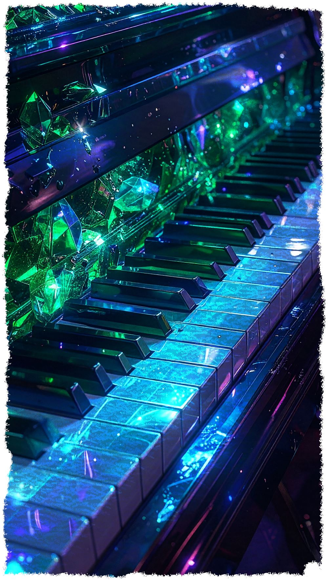
Optische Aufzeichnung aus dem Gläsernen Perzipron.
#L109Sektor-Optik: Visuelles Artefakt
eine Tastatur vor einem Synthesizer
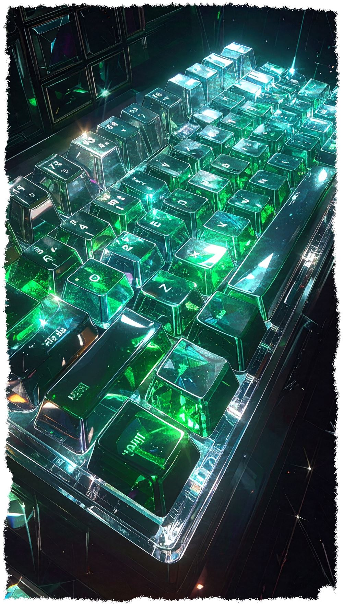
Optische Aufzeichnung aus dem Gläsernen Perzipron.
#L110Sektor-Optik: Visuelles Artefakt
Objekttafel 1
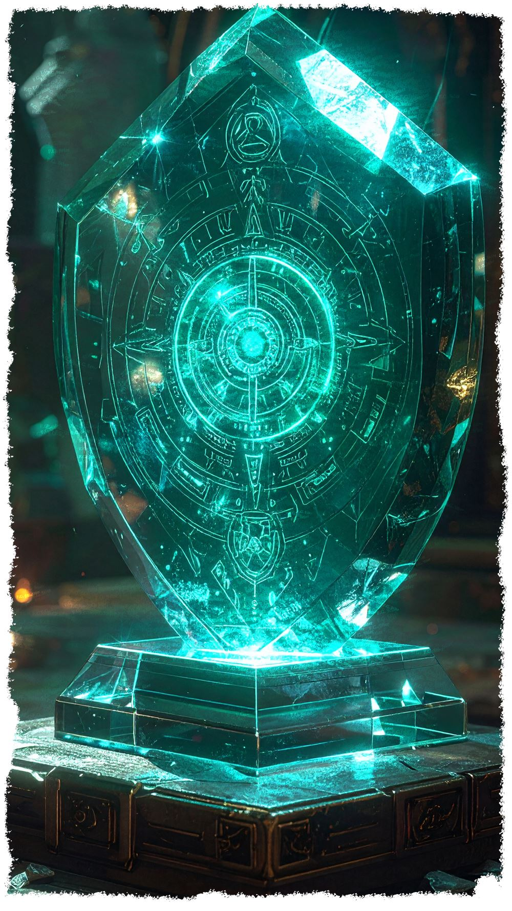
Optische Aufzeichnung aus dem Gläsernen Perzipron.
#L111Sektor-Optik: Visuelles Artefakt
Objekttafel 2
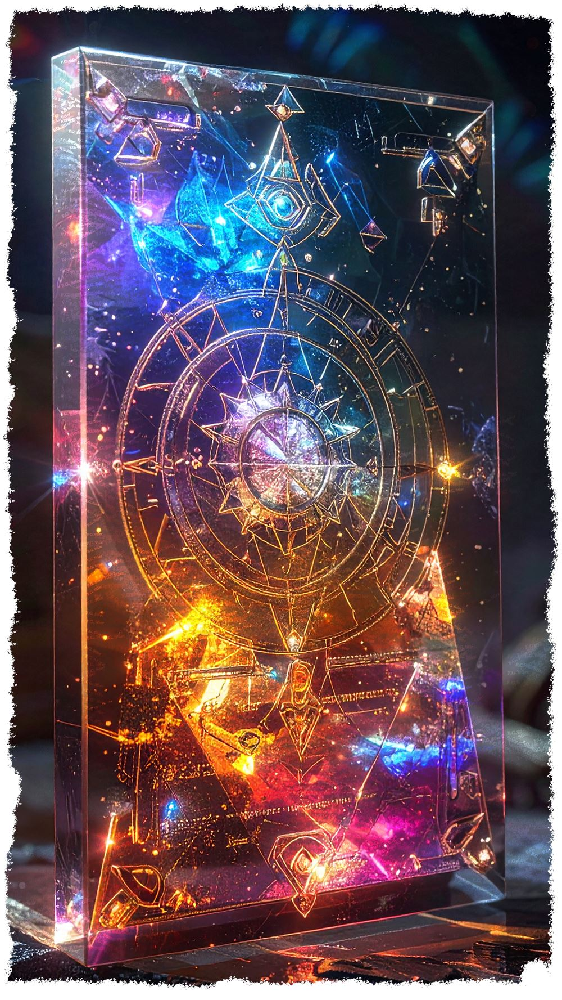
Optische Aufzeichnung aus dem Gläsernen Perzipron.
#L112Sektor-Optik: Visuelles Artefakt
Objekttafel 3
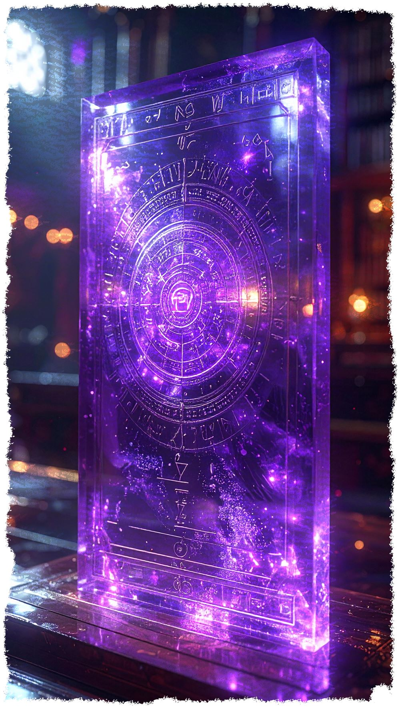
Optische Aufzeichnung aus dem Gläsernen Perzipron.
#L201Frequenz-Analyse: Chassis-Vibrationen
AUDIO-STREAM // REKURSIONS-MATERIAL
Willkommen im Sound der Rattara. Eine neue Welt der Geige erwartet dich. Die Musik ist für dieses Buch geschrieben und mit KI der
R.A.T.T.A.R.A - Technologie erstellt - das Grundprinzip einer organisch-resonanten Bewusstseinsform. Diese Entwicklung wird im weiteren
Verlauf der Dokumentation in diesem Buch eine große Rolle spielen.
#L301
Science-Fiction | Jazzkonzert in der Rattenkneipe | eine wundersame Beobachtung im Untergrund